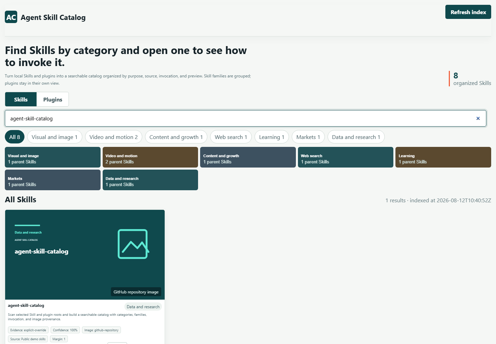
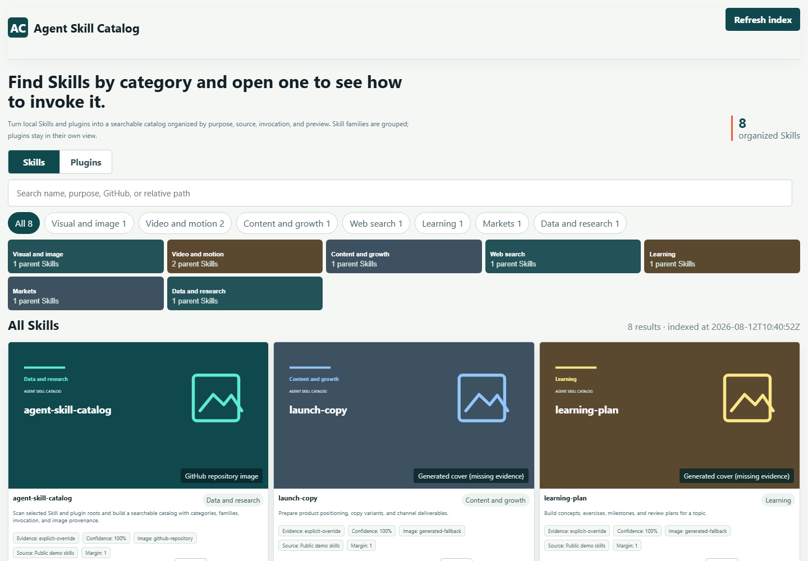
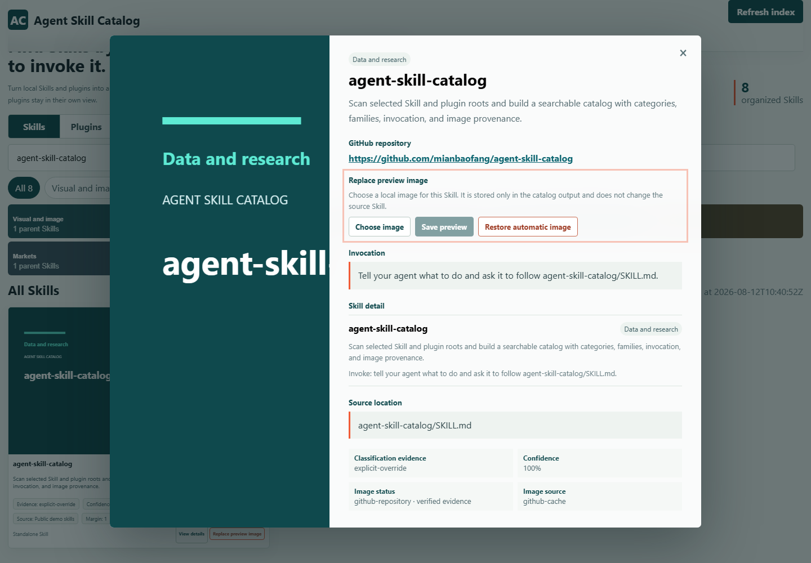

Families stay together
Real parent and child Skills appear as one family entry, with the child list available in the detail view.
local Skill manager for AI coding agents
Use a Codex Skill catalog to organize a large local library of Agent Skills and plugins by category, family, invocation, GitHub preview, real image evidence, and Chinese descriptions.
Read-only scan · desktop HTML · explicit roots · evidence labels
Install the published Skill, then tell your Agent which local roots to inspect.
gh skill install mianbaofang/agent-skill-catalog agent-skill-catalog --pin v0.3.2 --agent codex --scope user
Why it exists
A flat folder list hides the difference between a standalone Skill, a child of a larger family, and a plugin-provided capability. The catalog makes that difference visible before you invoke anything.
Real parent and child Skills appear as one family entry, with the child list available in the detail view.
Plugin-provided Skills are shown under their provider and plugin instead of inflating the standalone count.
Classification confidence, invocation text, GitHub URLs, image provenance, and missing evidence remain inspectable.
From folders to a usable index
Point the builder at the Skill folders and optional plugin caches you actually want to inspect.
Compare local SKILL.md content with an observed GitHub README, then keep category, family, description, and image status traceable.
The invoking Agent writes Chinese descriptions in resumable batches before the local page is reported complete.

What a detail view contains
The catalog is designed for repeated lookup: search a name, compare similar entries, then open the detail panel before you ask an Agent to use one.


Questions people actually ask
No. The builder reads only the roots you supply. It keeps source folders read-only and writes generated JSON, cached previews, and manual image overrides to the selected output directory.
Yes, when the configured roots and package evidence make that distinction observable. Plugin aggregates have their own view and are not counted as standalone Skills.
Manual output-owned overrides take priority. Otherwise the catalog uses verified public GitHub repository previews, Skill-provided local images, or a clearly labeled fallback when real image evidence is unavailable.
The invoking Agent reads the bounded local SKILL.md and observed GitHub README evidence, writes a natural Chinese batch, and applies it through the resumable description queue before the build can report completion.
Run the local server with the same roots recorded at startup and use the refresh action. The server rejects replacement inputs so a refresh cannot silently scan a different library.
Keep the folders local. Put the evidence, invocation, and relationships where you can search them.